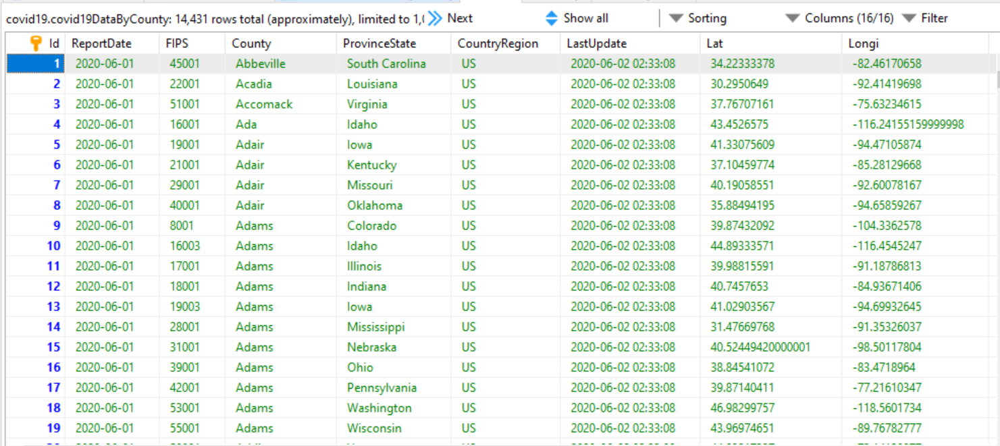

| Database |
Proper design only required a single table.
Used control totals during the daily loads to detect duplicates.
Autogenerated unique ids.
Created procedures to back out problem updates.
Created procedures to generate all data.
MariaDB security: complex password, user is restricted
to covid19 database, only has what's necessary for run time
in the production environment, I would encrypt DB-Details.ini
Used HeidiSQL
